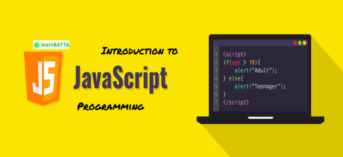

Express.js is a light-weight Web framework for Node.js. Which means you can build web applications using JavaScript. Since it is light, you can do many things faster and with less
lines of code, than a traditional Web application built using multiple technologies. Express provides a minimal interface to build our applications. It is flexible as there are
numerous modules available on npm, which can be directly plugged into Express. It makes it easier to organize your application’s functionality with middle ware and routing; it adds
helpful utilities to Node.js’s HTTP objects;it facilitates the rendering of dynamic HTTP objects. Express is a part of MEAN stack, a full stack JavaScript solution used in building
fast,robust, and maintainable production web applications. Express was developed by TJ Holowaychuk and is maintained by the Node.js foundation and numerous open source contributors.